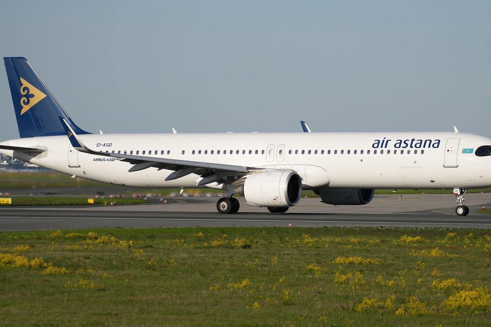

More Flights to China, Thinner Margins: Air Astana in 2025-2026
Revenue rose 16% in the first half of 2026, but costs rose faster and the group lost $21 million.

.jpg){kind=link}
Summary
Air Astana Group, which flies as Air Astana and the low-cost FlyArystan, earned $1.45 billion of revenue in 2025, 11% more than in 2024, but its profit fell from $52.8 million to $13.6 million. Faulty Pratt & Whitney engines grounded up to 13 aircraft in the peak season. China has become its fastest-growing market: weekly flights rose from 16 in 2024 to as many as 51 in summer 2026, and on 30 October 2026 it signed a joint venture with China Southern Airlines. In the first half of 2026 revenue grew 16%, but cost per seat-kilometre grew 22% and the group made a loss of $21.2 million.
Key findings
- Revenue rose 11% in 2025, to $1.45 billion, but profit fell from $52.8 million to $13.6 million.
- Faulty Pratt & Whitney engines forced 22 unscheduled removals in 2025 and grounded up to 13 aircraft in the peak season. The company puts the cost at $42.3 million of EBITDAR.
- China is the fastest-growing market: from 16 weekly flights in 2024 to as many as 51 in summer 2026. On 30 October 2026 Air Astana signed the first airline joint venture between Kazakhstan and China, with China Southern.
- In the first half of 2026 revenue per seat-kilometre rose 16% but cost per seat-kilometre rose 22%, and the group lost $21.2 million.
Two airlines, one group
The group has two brands. Air Astana is the full-service carrier, with long-haul flights to Europe and Asia; FlyArystan, launched in 2019, is the low-cost airline, mostly flying inside Kazakhstan. At the end of 2025 the group had 62 aircraft, 34 at Air Astana and 28 at FlyArystan, and it carried 9.7 million passengers, 8% more than a year earlier. Its shares are listed in Astana, Almaty and London.
2025: more passengers, less profit
Revenue grew 11%, to $1,454 million, and capacity measured in available seat-kilometres grew 14%. But costs grew faster. Most of the group's Airbus A320 family aircraft use Pratt & Whitney engines, which have had a known defect since 2023. In 2025 the group also had 22 unscheduled engine removals for other design problems, which grounded up to 13 aircraft when demand was highest. Staff hired for the summer and fixed maintenance costs were spread over fewer flights.
The weaker tenge hurt FlyArystan, which earns most of its money in tenge; the company estimates the cost at $18.4 million. Profit for the year fell to $13.6 million, and in the fourth quarter the group made a loss of $17.7 million. Cash stayed high at $473 million, and the group paid $37.2 million of dividends during the year.
China is where the growth is
Weekly flights to China rose from 16 in 2024 to 24 in 2025, across six destinations. In 2026 Air Astana added Almaty-Shanghai and Astana-Guangzhou, and FlyArystan added Aktau-Urumqi, Almaty-Xi'an and Almaty-Chongqing. By summer the group flew up to 51 times a week to seven Chinese cities, with nine planned by the end of the year, and its capacity to China in the second quarter was 81% higher than a year earlier (Figure 2).
The partner is China Southern Airlines. A codeshare between the two, covering 50 weekly flights, was agreed in 2025, and on 30 October 2026 they signed a joint venture, the first between airlines of the two countries. In peak season Air Astana flies up to 36 return flights a week to Urumqi, Beijing, Guangzhou and Shanghai, and China Southern up to 29 from Urumqi, Beijing, Guangzhou and Xi'an to Almaty and Astana. A separate note on China Southern looks at the Chinese side.
2026: revenue up, costs up more
In the first half of 2026 revenue rose 16%, to $764 million, with capacity almost unchanged, because the group moved aircraft to international routes and raised fares. Cost per seat-kilometre rose faster, by 22%. In the second quarter fuel bought at foreign airports cost 98% more than a year earlier, while conflict in the Gulf disrupted flying in the region, and the tenge was 7% stronger against the dollar, which makes local costs bigger in dollars. The group lost $21.2 million in the half, against a profit of $10.7 million a year earlier.
The company says the engine problem is turning: groundings were about 60% lower than a year earlier, and it expects none in summer 2027. Its medium-term aim is an EBITDAR margin in the mid-to-high 20s and 86 aircraft by 2030. Results for the third quarter are due on 12 November 2026.
| 2023 | 2024 | 2025 | 1H 2025 | 1H 2026 | |
|---|---|---|---|---|---|
| Revenue, $ million | 1,175 | 1,309 | 1,454 | 658 | 764 |
| Profit, $ million | 68.7 | 52.8 | 13.6 | 10.7 | −21.2 |
| Passengers, million | 8.1 | 9.0 | 9.7 | 4.50 | 4.39 |
| RASK, US cents | 6.75 | 6.60 | 6.41 | 7.43 | |
| CASK, US cents | 6.10 | 6.20 | 5.97 | 7.30 |
Statutory IFRS figures. Sources: Air Astana, 2025 results; first-half 2026 results; 2024 results.
Valuation
Air Astana's shares closed at ₸699.87 on the Kazakhstan Stock Exchange on 30 October 2026, which values the group at about $556 million (Table 2). That is 41 times its small 2025 profit and 1.5 times book value. Over the twelve months to June 2026 the group made a loss of $18.3 million, so a price-to-earnings ratio on recent profit cannot be calculated. Investors are paying for the expected recovery in margins, not for current earnings.
| Share price, 30 October 2026 | ₸699.87 |
| Market value | $556 million |
| Price to 2025 profit (P/E) | 41.0 |
| Price to book value (P/B) | 1.50 |
| Profit, July 2025-June 2026 | loss of $18.3 million |
Shares in issue derived from equity and book value per share at 31 December 2025. Sources: KASE; Air Astana, 2025 results.
How it compares
Of the seven companies covered on this site, Air Astana is the second most expensive by price to 2025 profit. The table ranks them from lowest to highest.
| Company | Market value, US$ bn | P/E | P/B | Dividend yield |
|---|---|---|---|---|
| Halyk Bank | 9.0 | 3.8 | 1.12 | 15.6% |
| Geely Automobile | 19.0 | 7.5 | n/a | 3.6% |
| Kaspi.kz | 17.8 | 7.6 | n/a | 9.4% |
| Kazatomprom | 16.2 | 12.9 | n/a | 4.6% |
| KazMunayGas | 48.5 | 20.5 | n/a | 1.6% |
| Air Astana | 0.6 | 41.0 | 1.50 | none |
| China Southern Airlines | 6.3 | 48.9 | 1.17 | none |
P/E is the market value divided by 2025 profit; P/B uses the latest reported equity, where shown in the notes. A low P/E can mean a cheap share or a profit the market expects to fall. Sources: KASE; Stock Analysis; National Bank of Kazakhstan exchange rates.
Who owns the company
Samruk-Kazyna, the sovereign wealth fund, holds 41.0% of Air Astana and is the only shareholder with more than 10% in its own name. Citibank holds 35.7% as depositary for investors who own the airline through global depositary receipts traded in London. BAE Systems, which founded the airline together with the Kazakh state and owned 49% before the 2024 listing, agreed in March 2026 to sell its last shares.
Risks
- The engine problem is not over: the company expects the backlog of engines waiting for repair to last through 2028.
- Fuel bought abroad has become much more expensive, and the group hedges only part of it.
- Exchange rates work both ways: a weak tenge hurts FlyArystan's revenue, a strong tenge raises costs in dollars.
- Leverage is rising. Net debt was 2.1 times EBITDAR in June 2026, against 1.3 times a year earlier.
My view
I have flown with both Air Astana and FlyArystan. Air Astana's service is of a very high standard: on board there is a wide range of services, such as in-flight entertainment, a broader menu and comfortable seats. Most important, I think, is how convenient the apps are. Online check-in through the Air Astana and FlyArystan apps is fast, and the staff are well trained.
This note is independent research for information and learning. It is not investment advice or a recommendation to buy or sell any security.
Notes and method
- All company figures come from Air Astana's own results releases, listed under Sources. Money is in US dollars, the group's reporting currency. Revenue and profit are the statutory figures; the company's own growth rates exclude a one-off item of $4.2 million in 2024, so they differ slightly from those calculated here.
- RASK and CASK are revenue and cost per available seat-kilometre. EBITDAR is the company's measure of profit before interest, tax, depreciation and aircraft rent.
- Valuation uses the closing price on the Kazakhstan Stock Exchange on 30 October 2026. The number of shares, about 360 million, is total equity divided by book value per share at the end of 2025. Profit for July 2025 to June 2026 and percentage changes are calculated by the author.
Sources
- Air Astana, Results for the fourth quarter and full year ended 31 December 2025 (13 March 2026)
- Air Astana, Results for the second quarter and six months ended 30 June 2026 (5 August 2026)
- Air Astana, Financial and operational results for 2024 (March 2025)
- Air Astana, Air Astana and China Southern Airlines sign Joint Venture Agreement (30 October 2026)
- Kazakhstan Stock Exchange (KASE), share pages for KSPI, HSBK, KZAP, KMGZ and AIRA, trades on 30 October 2026
- Kazakhstan Stock Exchange, Information on shares and shareholders of Air Astana as of July 1, 2026
- Interfax, BAE Systems to sell remaining stake in Air Astana (19 March 2026)
- FlightGlobal, Air Astana co-founder BAE Systems exits carrier after nearly 25 years
Download
Chingiz Bakytzhanov (2026). More Flights to China, Thinner Margins: Air Astana in 2025-2026. Steppe & Silk Research, 1 November 2026. https://steppesilk.com/research/air-astana-2026.html
Found an error? Email chingiz.bakytjanov@gmail.com. Corrections are listed here with their date.